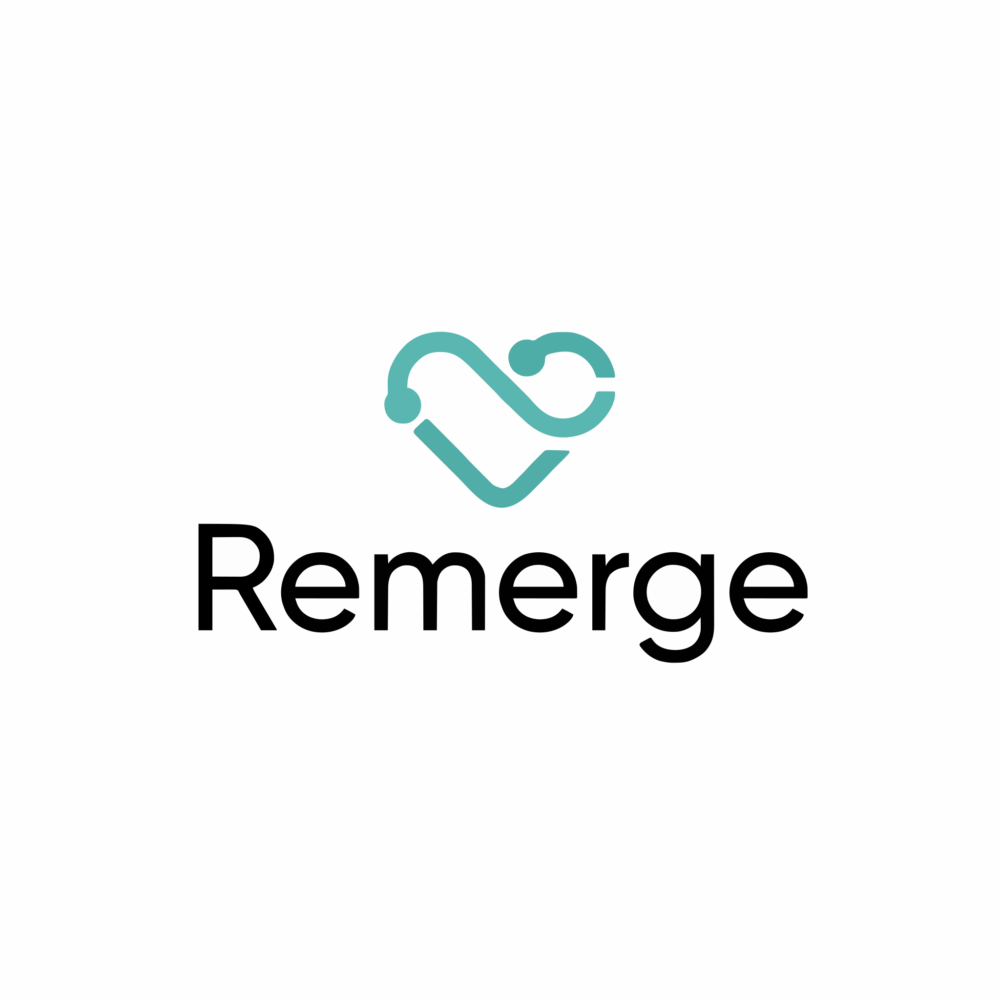

Remerge
Ένας ψηφιακός δίδυμος για την καρδιά σου
Δοκιμάζουμε θεραπείες πρώτα σε ένα εικονικό αντίγραφο του ασθενή — όχι στον ίδιο.
1 Αρχιτεκτονική & Διαδικασία
Πώς «χτίζεται» και λειτουργεί ο ψηφιακός δίδυμος, βήμα προς βήμα.
📊
Βήμα 1
Συλλέγουμε δεδομένα
Κλινικές εξετάσεις, απεικονίσεις, καθημερινές συνήθειες — ανώνυμα και με ασφάλεια.
→
🫀
Βήμα 2
Χτίζουμε τον δίδυμο
Εικονικό αντίγραφο καρδιάς και οργάνων: φυσιολογία + στατιστική + τεχνητή νοημοσύνη.
→
🔮
Βήμα 3
«Τι θα γίνει αν…;»
Προσομοιώνουμε την εξέλιξη της νόσου και το αποτέλεσμα κάθε θεραπείας.
→
🤝
Βήμα 4
Αποφασίζουμε μαζί
Γιατρός και ασθενής βλέπουν τα αποτελέσματα σε μια εφαρμογή. Η AI εξηγεί, ο γιατρός αποφασίζει.
↺ Τα σχόλια των γιατρών ξαναμπαίνουν στο μοντέλο και το κάνουν συνεχώς πιο ακριβές.
🔒
Federated learning
Τα δεδομένα δεν φεύγουν ποτέ από το νοσοκομείο — ταξιδεύει μόνο το μοντέλο.
↺
Ανατροφοδότηση
Ο γιατρός επιβεβαιώνει, το μοντέλο ξαναεκπαιδεύεται και βελτιώνεται συνεχώς.
2 Το έργο σε αριθμούς
18,9 → 32+ εκ.
θάνατοι/έτος από καρδιαγγειακά νοσήματα, 2020 → 2050
7 φορείς · 6 χώρες
πανεπιστήμια, νοσοκομείο, εταιρείες
4 χρόνια
2026–2030 · ανταλλαγές ερευνητών